主要扩展节点¶
1. Filter 域节点¶
Filter Object Info¶
入口¶
Add > Input > Filter Object Info
仅在 Filter 域下可用。

作用¶
读取指定对象的世界空间变换和视口显示颜色，方便在 Filter Graph 的 Filter Pass 材质中做基于对象状态的全屏滤镜控制。
节点设置¶
Object
输出¶
LocationRotationScaleColor
说明¶
Location：所选对象的世界空间位置Rotation：所选对象的世界空间欧拉旋转，单位为弧度Scale：所选对象的世界空间缩放Color：所选对象的视口显示颜色- 如果没有指定对象，会输出默认值：位置 / 旋转 / 颜色为
0，缩放为1
Filter Mask¶
入口¶
Add > Input > Filter Mask
仅在 Filter 域下可用。
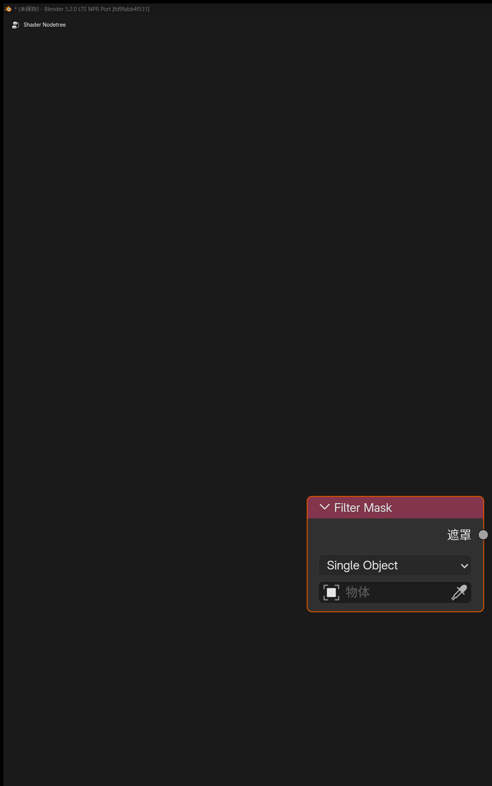
作用¶
使用 Eevee Cryptomatte 对象信息，为滤镜材质快速生成对象遮罩。
输出¶
Mask
面板选项¶
ModeSingle ObjectObject ListCollection
说明¶
Single Object适合快速指定单个控制对象Object List适合手动维护一组对象，也可以用Use Selection/Append Selection从当前选择批量填充Collection适合按集合层级统一管理遮罩对象- 输出是
0-1浮点遮罩，可直接接到Mix、阈值、AOV 写出或其他滤镜控制链路中 - 只对可渲染的几何对象有效
Scene Color¶
入口¶
Add > Input > Scene Color
仅在 Filter 域下可用。

作用¶
读取 Eevee 当前场景缓冲，可在节点面板中切换 Source：
ColorDepthNormalPosition
输入输出¶
- 输入：
Vector - 输出：
Color、Alpha
说明¶
Color：读取最终场景颜色Depth：读取线性深度Normal：读取场景法线Position：读取世界空间位置- 不连接
Vector时，默认按Texture Coordinate的Window坐标采样 - 连接
Vector时，Color / Depth / Normal / Position都按同一套屏幕 UV 偏移采样；Position会从偏移后的深度和屏幕坐标重建对应像素的世界坐标
2. Eevee 通用辅助节点¶
Render Info¶
入口¶
Add > Input > Render Info

输出¶
Frag CoordWidthHeight
作用¶
提供当前 Eevee 渲染窗口的坐标和像素尺寸。
说明¶
Frag Coord.xy为归一化到0-1的屏幕 UVFrag Coord.z为当前片元深度Width/Height为当前渲染区域的像素尺寸
Scene Time¶
入口¶
Add > Input > Scene Time

输入¶
Scale
输出¶
FrameSecondsTimelineScaled Frame
作用¶
提供当前场景时间相关的数值输出。
Screen Derivative¶
入口¶
Add > Utilities > Math > Screen Derivative

功能¶
获得屏幕相邻像素之间的差异：
DDXDDYDDXY
其中 DDXY 表示 DDX + DDY。
Portal In / Portal Out¶
入口¶
Add > Layout > Portal InAdd > Layout > Portal Out

功能说明¶
这是一组用来整理节点连线的“传送门”节点。
说明¶
Portal In：在当前节点树里存一个有名字、有类型的值Portal Out：在同一节点树内按名字把这个值取出来继续使用- 新建
Portal In时会自动生成唯一名称 Portal Out上带有放大镜按钮，可快速跳转到对应的Portal In- 只在同一个 shader node tree 内识别，不支持跨节点树和跨节点组自动穿透
3. Eevee 物体材质节点¶
Outline Control¶
入口¶
Add > Output > Outline Control
在 Eevee 物体材质和 NPR Tree 中可用。

输入¶
Line ColorLine AlphaLine WidthDepth ThresholdDepth Threshold RangeDepth Edge WidthNormal ThresholdNormal Threshold RangeNormal Edge WidthOutline IDID EdgeID Edge WidthFreestyle Edge
作用¶
为 Eevee 内置屏幕空间描边系统写入描边参数。
使用方法¶
- 在需要产生描边的材质里添加
Outline Control节点。 - 通过
Line Color、Line Alpha和Line Width控制描边颜色、透明度和宽度。 - 在
Depth与Normal面板中分别调整阈值、过渡范围和边宽倍率。 - 在
ID面板中控制 ID 边界及其宽度，并按需启用Freestyle Edge。 - 在
Render Properties > Outline中保持全局描边开关开启。 - 如果需要单独输出描边结果，在
View Layer Properties > Passes > Data中开启OutlineRender Pass。
说明¶
- 这是一个辅助输出节点，不替代
Material Output，可与普通表面输出同时存在 Line Alpha会与Line Color.a相乘，最终共同决定描边透明度Line Width <= 0或最终 alpha 为0时，不会写出描边Outline ID = 0时，系统会按对象资源 ID 自动分配描边分组Outline ID > 0时，可以手动把多个对象或多个材质表面并到同一个描边分组里Depth Threshold更偏向控制深度断层轮廓，Normal Threshold更偏向控制法线夹角造成的内部边Threshold Range = 0时阈值为硬切换；增大范围可让边宽在越过阈值后平滑增长Depth / Normal / ID Edge Width分别控制三类边的宽度倍率ID Edge控制不同 Outline ID 之间的边界，Freestyle Edge控制标记边是否参与描边- 位于 Holdout 集合中的物体不会继续写出
Outline Control参数，也不会贡献 Freestyle / marked-edge 描边种子
Render Texture¶
入口¶
Add > Texture > Render Texture

作用¶
读取前面在场景里配置好的 Render Textures 条目。
输入输出¶
- 输入：
Vector - 输出：
Color、Alpha
Screenspace Info¶
入口¶
Add > Input > Screenspace Info

输入输出¶
- 输入：
View Position - 输出：
Scene Color、Scene Depth
作用¶
获得当前渲染缓冲中的颜色或深度内容。
使用说明¶
- 渲染设置中需要打开
Raytracing - 材质选项
Render Method选择Dithered - 材质选项打开
Raytraced Transmission View Position默认输入为把当前位置变换到摄像机空间后再反转Z轴
World Environment¶
入口¶
Add > Input > World Environment

输入输出¶
- 输入：
Direction - 输出：
Color
作用¶
直接采样 Eevee 的世界环境颜色，不依赖屏幕后方是否还有几何。
说明¶
Direction不连接时，默认使用当前表面的视线方向Direction连接后，可以按指定方向采样世界环境- 输出更接近 Eevee 的环境 / probe 结果，而不是屏幕空间缓冲
Light Probe Color¶
入口¶
Add > Input > Light Probe Color
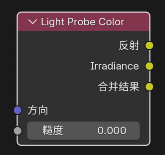
输入输出¶
- 输入：
Direction、Roughness - 输出：
Reflection、Irradiance、Combined
作用¶
直接读取 Eevee 当前可用的光照探针结果，分别输出反射探针颜色、环境谐波漫反射颜色，以及两者叠加后的结果。
说明¶
Reflection更接近反射探针 / 世界环境方向采样结果Irradiance更接近体积光照探针或环境谐波的漫反射光照结果Combined为Reflection + IrradianceRoughness控制反射探针的模糊程度，0接近镜面，1为最粗糙
World To Tangent¶
入口¶
Add > Utilities > Vector > World To Tangent

输入输出¶
- 输入：
Vector - 输出：
Vector
作用¶
把一个世界空间方向向量转换到当前表面的切线空间。
说明¶
- 节点面板中可指定
UV Map，该 UV 的切线会作为转换基底 - 适合拿来做各向异性方向控制、切线空间流向、局部扫描方向等效果
GLSL Function¶
入口¶
Add > Script > GLSL Function
在 Eevee 物体材质、Filter 材质和 NPR Tree 中可用；当前不在 World 域开放。
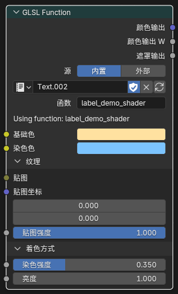
作用¶
把一段用户编写的 GLSL 函数接入当前 Eevee 物体、Filter 或 NPR 材质编译流程，适合做自定义数学节点、程序纹理、SDF、屏幕效果封装，以及移植一部分外部 GLSL / HLSL 逻辑。
基本使用方法¶
- 添加
GLSL Function节点。 - 选择内部
Text数据块，或者指定一个外部.glsl文件。 - 在
Function中显式选择真正要导出的函数名。 - 使用节点顶部的
Node / Code分段按钮切换普通节点控制和内联代码编辑。 - 源码或函数选择发生变化后，点击刷新按钮解析、验证并更新节点接口。

Node 模式中的源码、函数和参数接口
Node / Code 编辑模式¶
Node模式用于选择源码、函数和调整 socket；Code模式可直接在节点中编辑内部 Text 的源码与目标函数名。- 在
Code模式输入内容只会更新节点的 draft，不会立即覆盖 Text、替换现有 socket 或改变正在运行的材质。 - draft 处于 dirty 状态时，刷新按钮执行原子 Apply：候选源码必须先通过解析和 GPU 编译验证，成功后才会写回 Text 并刷新接口；失败时继续保留旧 Text、旧 socket 和旧材质结果。
- 回退按钮执行 Discard，放弃尚未 Apply 的源码和函数名修改。
- 多个
GLSL Function节点共享同一个 Text 时，Apply 会先验证所有用户，再一起刷新。其他用户存在未应用 draft、Text 被外部修改或存在不可编辑的链接用户时，Apply 会拒绝并保留当前状态。 - 外部
.glsl在Code模式中只读；使用Make Internal可把当前外部源码复制为内部 Text 后再编辑。 - 未应用的 draft 会随
.blend文件保存并在重新打开后恢复。

外部源码在 Code 模式中只读，可通过 Make Internal 转为内部 Text
示例工程¶
GLSL Function示例.blend工程： Google Drive- 这个文件可作为当前
GLSL Function工作流和节点接线的现成参考场景。
当前支持的函数边界类型¶
- 输入参数：
float、int、bool、vec2、vec3、vec4、mat2、mat3、mat4、sampler2D - 输出参数：
out float、out int、out bool、out vec2、out vec3、out vec4、out mat2、out mat3、out mat4 - 返回值：
void、float、int、bool、vec2、vec3、vec4、mat2、mat3、mat4
重要说明¶
Function不会自动选第一个函数，需要手动指定sampler2D会显示为Closure输入口sampler2D可连接Image to Closure或符合约定的Closure OutputClosure Output -> sampler2D当前只保证texture(tex, uv)这种直接采样形式- 如果函数依赖
textureLod、textureGrad、textureSize、texelFetch这类图像专用能力，应优先配合Image to Closure @glsl_meta支持default、min、max、hide_value、subtype、label、description和一级折叠面板分组float当前支持的subtype：none、unsigned、percentage、factor、mass、angle、time、time_absolute、distance、wavelengthvec2 / vec3 / vec4当前支持的subtype：none、factor、percentage、translation、direction、velocity、acceleration、euler、xyzsubtype=color额外只支持vec3和vec4@glsl_meta default=除了 literal 以外，也支持glsl_position()、normalize(glsl_normal())、glsl_ambient_lighting()这类表达式默认值- 当
@glsl_meta default=使用表达式时，socket 未连接就取表达式，连接后就取连线值，并自动隐藏这个输入的数值编辑框 - 表达式默认值当前只建议用于输入参数
float / vec2 / vec3 / vec4，并且不要直接引用同函数其他参数名 label="..."可以给 socket 设置节点界面的显示名，支持中文和带空格的单行引号字符串；它不改变 GLSL 参数名或 socket identifierdescription="..."可以给输入 socket 写 tooltip 注释，支持带空格的单行引号字符串@panel "Name" closed=true|false可以把后续输入放到节点上的一级折叠面板里，必须用@end_panel显式关闭- 面板只支持一级，不支持嵌套；面板内可以写
param:空属性行，只做分组不改默认值 sampler2D可写label、description并放进 panel，但不支持default / min / max / hide_value / subtype- 只有显式写了
subtype=color的vec3 / vec4输入，才会显示成颜色插口 vec3 + subtype=color进入 GLSL 时按rgb使用，alpha固定为1.0vec4 + subtype=color会保留完整rgba- 刷新或重新编译节点时，
vec4输入会保留w分量，不会退化成vec3 / rgb mat2 / mat3 / mat4边界会在节点上拆分为矩阵列 socket，并在生成的 GLSL 包装函数中重新组合- 矩阵输入的 Meta 目前只建议使用
label、description和panel；不要为矩阵写default / min / max / subtype - 当前不支持把
struct / array作为导出函数边界类型 - 导出函数边界当前已经支持
int / bool，适合直接写模式开关、枚举值、lightgroup_id这类参数 - 内置了几何 helper，可在函数体里直接读取：
glsl_position()、glsl_normal()、glsl_true_normal()、glsl_incoming() - 内置了环境光 helper：
glsl_ambient_lighting() - 内置了 Eevee 直接光辅助 helper，可在函数体里使用：
GLSLLight、glsl_light_count()、glsl_light_get(light_index)、glsl_light_shadow(light_index, shading_normal) GLSLLight.lightgroup_id直接对应灯光数据面板里的Lightgroup IDGLSLLight.attenuation只是自定义逐灯模型的基础衰减项，不包含NdotL、toon ramp、Blinn-Phong、GGX、shadow 或材质侧 Fresnel / metallic / roughness- 如果灯光节点树使用了
Light Shader Output，glsl_light_get(i).diffuse_color、glsl_light_get(i).specular_color和glsl_light_get(i).attenuation会读取 Light Shader 评估后的颜色与衰减 Light Shader Output只影响这三个颜色 / 衰减字段；type、index、lightgroup_id、vector、position、direction、distance仍来自 Eevee 原始灯光数据- 没有 Light Shader 输出时，
GLSLLight保持普通 Eevee 灯光访问行为 - 这套直接光 helper 面向 Eevee 物体材质和
NPR Tree的 Surface/Fragment 路径；Filter、World、体积、probe / indirect lighting 不作为稳定公共语义 - 推荐写法：
light.diffuse_color * light.attenuation * max(dot(N, light.vector), 0.0) * glsl_light_shadow(...) - 推荐写法：
light.specular_color * light.attenuation * custom_spec_term * glsl_light_shadow(...)
示例：带注释和面板的参数 Meta¶
label="..." 会显示为 socket 名称；description="..." 会显示为输入 socket 的 tooltip；@panel 可以把大量输入分组到节点上的一级折叠面板里。
/* @glsl_meta v1
base_color: label="基础色" default=vec3(1.0) subtype=color description="Base surface color"
@panel Specular closed=true
specular: label="高光强度" default=0.5 min=0.0 max=1.0 subtype=factor description="Specular strength"
roughness: label="粗糙度" default=0.45 min=0.0 max=1.0 subtype=factor description="Highlight roughness"
@end_panel
@panel Texture closed=true
tex: label="贴图" description="Texture closure used by texture(tex, uv)"
uv: label="坐标" default=vec2(0.0) description="Texture coordinates"
@end_panel
*/
vec4 annotated_shader(vec3 base_color, float specular, float roughness, sampler2D tex, vec2 uv)
{
vec3 tex_color = texture(tex, uv).rgb;
vec3 color = mix(base_color, tex_color, specular * (1.0 - roughness));
return vec4(color, 1.0);
}
label和description只影响 UI，不改变 socket identifier、默认值同步规则或 GLSL 调用方式out参数只支持label；其他 Meta 仍只支持输入参数sampler2D可写label、description并放进 panel，但不支持default / min / max / hide_value / subtype- 面板只支持一级，不支持嵌套，且必须用
@end_panel显式关闭
示例：mode 对照调试 helper¶
如果你想在一个 GLSL Function 节点里按 mode 切换并读取这组 helper，下面这张表可以直接作为对照：
mode |
对应 helper / 字段 |
|---|---|
0 |
glsl_position() |
1 |
glsl_normal() |
2 |
glsl_true_normal() |
3 |
glsl_incoming() |
4 |
glsl_ambient_lighting() |
5 |
glsl_light_count() |
6 |
light.valid |
7 |
light.type |
8 |
light.lightgroup_id |
9 |
light.vector |
10 |
light.position |
11 |
light.direction |
12 |
light.distance |
13 |
light.diffuse_color |
14 |
light.specular_color |
15 |
light.attenuation |
16 |
glsl_light_shadow(i, N) |
示例：按 lightgroup_id 过滤灯光¶
如果你想在 GLSL Function 里只接收某一个灯光组，可以直接读取 GLSLLight.lightgroup_id。下面这个版本同时展示 subtype=color、int / bool 默认值、description、min / max、subtype=factor 和 @panel：
/* @glsl_meta v1
albedo: default=vec3(1.0) subtype=color description="Diffuse albedo for the selected light group"
target_lightgroup_id: default=0 description="Only lights with this Lightgroup ID are included"
@panel Shading closed=false
use_shadow: default=true description="Apply glsl_light_shadow to selected lights"
shadow_strength: default=1.0 min=0.0 max=1.0 subtype=factor description="Blend from unshadowed to fully shadowed direct light"
ambient_floor: default=0.0 min=0.0 max=1.0 subtype=factor description="Small constant fill after lightgroup filtering"
@end_panel
*/
vec4 lightgroup_lambert(vec3 albedo,
int target_lightgroup_id,
bool use_shadow,
float shadow_strength,
float ambient_floor)
{
vec3 N = normalize(glsl_normal());
vec3 result = vec3(0.0);
float shadow_mix = clamp(shadow_strength, 0.0, 1.0);
for (int i = 0; i < glsl_light_count(); i++) {
GLSLLight light = glsl_light_get(i);
if (!light.valid || light.lightgroup_id != target_lightgroup_id) {
continue;
}
float NdotL = max(dot(N, light.vector), 0.0);
if (NdotL <= 0.0) {
continue;
}
float shadow = use_shadow ? glsl_light_shadow(i, N) : 1.0;
shadow = mix(1.0, shadow, shadow_mix);
result += albedo * light.diffuse_color * light.attenuation * NdotL * shadow;
}
result += albedo * clamp(ambient_floor, 0.0, 1.0);
return vec4(result, 1.0);
}
示例：PBR 风格直光 + 环境光¶
下面这段示例演示当前 GLSL Function 如何直接同时使用：
- 几何 helper：
glsl_normal()、glsl_true_normal()、glsl_incoming() - 环境光 helper：
glsl_ambient_lighting() - 逐灯 helper：
glsl_light_count()、glsl_light_get(i)、glsl_light_shadow(i, N)
函数名可设为 pbr_lit。这个版本把常用表面参数放进 Surface 面板，并把内置 helper 作为 expression default 暴露成可选覆盖输入：
/* @glsl_meta v1
base_color: default=vec3(0.8, 0.72, 0.6) subtype=color description="Base surface albedo"
@panel Surface closed=false
roughness: default=0.45 min=0.04 max=1.0 subtype=factor description="Microfacet roughness"
metallic: default=0.0 min=0.0 max=1.0 subtype=factor description="Metallic blend amount"
ao: default=1.0 min=0.0 max=1.0 subtype=factor description="Ambient occlusion multiplier"
@end_panel
@panel Builtin Helpers closed=true
normal_ws: default=normalize(glsl_normal()) hide_value=true description="Optional world-space shading normal override"
view_ws: default=normalize(glsl_incoming()) hide_value=true description="Optional world-space view direction override"
ambient_light: default=glsl_ambient_lighting() subtype=color hide_value=true description="Optional ambient lighting override"
@end_panel
*/
float saturate1(float x)
{
return clamp(x, 0.0, 1.0);
}
float pow5(float x)
{
float x2 = x * x;
return x2 * x2 * x;
}
vec3 fresnel_schlick(float cos_theta, vec3 F0)
{
return F0 + (vec3(1.0) - F0) * pow5(1.0 - saturate1(cos_theta));
}
float distribution_ggx(float NdotH, float roughness)
{
float a = roughness * roughness;
float a2 = a * a;
float nh2 = NdotH * NdotH;
float denom = nh2 * (a2 - 1.0) + 1.0;
return a2 / max(3.14159265 * denom * denom, 1e-6);
}
float geometry_schlick_ggx(float NdotV, float roughness)
{
float r = roughness + 1.0;
float k = (r * r) / 8.0;
return NdotV / max(NdotV * (1.0 - k) + k, 1e-6);
}
float geometry_smith(float NdotV, float NdotL, float roughness)
{
return geometry_schlick_ggx(NdotV, roughness) *
geometry_schlick_ggx(NdotL, roughness);
}
vec4 pbr_lit(vec3 base_color,
float roughness,
float metallic,
float ao,
vec3 normal_ws,
vec3 view_ws,
vec3 ambient_light)
{
vec3 N = normalize(normal_ws);
vec3 Ng = normalize(glsl_true_normal());
vec3 V = normalize(view_ws);
if (dot(N, Ng) < 0.0) {
N = Ng;
}
roughness = clamp(roughness, 0.04, 1.0);
metallic = clamp(metallic, 0.0, 1.0);
ao = clamp(ao, 0.0, 1.0);
vec3 F0 = mix(vec3(0.04), base_color, metallic);
vec3 direct_diffuse = vec3(0.0);
vec3 direct_specular = vec3(0.0);
for (int i = 0; i < glsl_light_count(); i++) {
GLSLLight light = glsl_light_get(i);
vec3 L = normalize(light.vector);
vec3 H = normalize(V + L);
float NdotL = saturate1(dot(N, L));
float NdotV = saturate1(dot(N, V));
float NdotH = saturate1(dot(N, H));
float VdotH = saturate1(dot(V, H));
if (NdotL <= 1e-5 || NdotV <= 1e-5) {
continue;
}
float shadow = glsl_light_shadow(i, N);
vec3 F = fresnel_schlick(VdotH, F0);
float D = distribution_ggx(NdotH, roughness);
float G = geometry_smith(NdotV, NdotL, roughness);
vec3 specular_brdf = (D * G * F) / max(4.0 * NdotV * NdotL, 1e-5);
vec3 kd = (vec3(1.0) - F) * (1.0 - metallic);
vec3 diffuse_brdf = kd * base_color / 3.14159265;
direct_diffuse += diffuse_brdf *
light.diffuse_color *
light.attenuation *
NdotL *
shadow;
direct_specular += specular_brdf *
light.specular_color *
light.attenuation *
NdotL *
shadow;
}
vec3 ambient = ambient_light * base_color * (1.0 - metallic) * ao;
vec3 color = ambient + direct_diffuse + direct_specular;
return vec4(max(color, vec3(0.0)), 1.0);
}
补充说明：
normal_ws、view_ws、ambient_light都有表达式默认值；socket 未连接时会自动调用对应内置 helper，连接后则使用外部输入hide_value=true用于这类 helper 覆盖输入，避免节点上显示一个容易误解的静态默认数值
GLSL Script Expression¶
入口¶
Add > Script > GLSL Script Expression
在 Eevee 物体材质和 NPR Tree 中可用。

作用¶
用一条单行 GLSL 表达式生成一个 Result 输出，适合把简单数学、颜色混合、向量重组和调试公式直接放进节点树，而不必创建单独的 Text 数据块或外部 .glsl 文件。
节点设置¶
Output TypeFloatVectorColorExpression：赋值给Result的单条 GLSL 表达式Variables：手动维护输入变量列表，每个变量都会生成同名输入 socket- 每个变量的类型支持
Float、Vector、Color
使用方法¶
- 添加
GLSL Script Expression节点。 - 设置
Output Type。 - 在
Variables面板中添加需要暴露到节点树的变量，并设置变量名与类型。 - 在
Expression中直接引用这些变量名。 - 把
Result接到后续节点。
示例¶
mix(base_color, tint_color, clamp(mask, 0.0, 1.0))
对应变量：
base_color：Colortint_color：Colormask：FloatOutput Type：Color
限制¶
- 只允许单条表达式，不允许
;、{}、预处理指令或多语句代码块 - 不允许赋值、递增递减、控制流、声明语句和注释
- 表达式只面向数值 GLSL；不支持字符串、采样器、贴图采样函数、image load/store
- 不能直接调用
glsl_position()、glsl_normal()、glsl_light_get()这类GLSL Functionhelper - 变量名会被整理成合法 GLSL 标识符；保留字、
gl_前缀和内部 helper 名称会被自动避让 - 如果需要函数、纹理、直接光 helper、
sampler2D或复杂控制流，应改用GLSL Function
Image to Closure¶
入口¶
Add > Texture > Image to Closure
在 Eevee 物体材质和 NPR Tree 中可用。
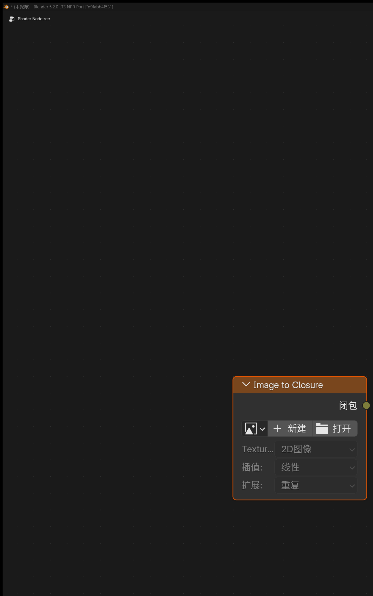
输出¶
Closure
作用¶
把一张普通图片包装成 sampler2D 可消费的 Closure 源，主要用于给 GLSL Function(sampler2D) 提供图像输入，同时保持和程序化 Closure Output 相同的接线形式。
节点设置¶
ImageInterpolationExtension
使用说明¶
- 这个节点没有普通贴图插口，图片是在节点面板里直接选择
- 它主要是
sampler2D工作流的图像适配节点，不是普通Image Texture的替代品 - 当函数需要图像资源专用采样能力时，应优先使用这个节点
Basis Transform¶
入口¶
Add > Utilities > Vector > Basis Transform

作用¶
基于 Origin + 轴向输入 在材质节点里完成自定义基底变换，可用于处理点、方向向量和法线。
输入输出¶
- 输入：
Vector - 输入：
Origin - 输入：
X Axis - 输入：
Y Axis - 输入：
Z Axis - 输出：
Vector
面板选项¶
DirectionTo BasisFrom BasisVector TypePointVectorNormalBasis InputXYXZYZXYZOrthonormalizeFallback
说明¶
Point模式会把Origin当作平移参考；Vector和Normal模式只做方向变换Basis Input可以只提供两根轴，由节点补出第三根轴；也可以显式输入XYZOrthonormalize适合在输入轴不完全正交时做稳定化，减少基底误差Fallback用于控制基底退化或长度异常时的回退行为- 适合做局部坐标投影、程序贴图定向、各向异性方向控制和自定义法线空间转换
Twirl¶
入口¶
Add > Utilities > Vector > Twirl

输入输出¶
- 输入：
Vector - 输入：
Center - 输入：
Amount - 输出：
Vector
作用¶
围绕指定中心对输入坐标做旋扭，适合做 Goo Engine 风格的旋涡、扭曲 UV 和极坐标变形。
Water Ripples¶
入口¶
Add > Texture > Water Ripples
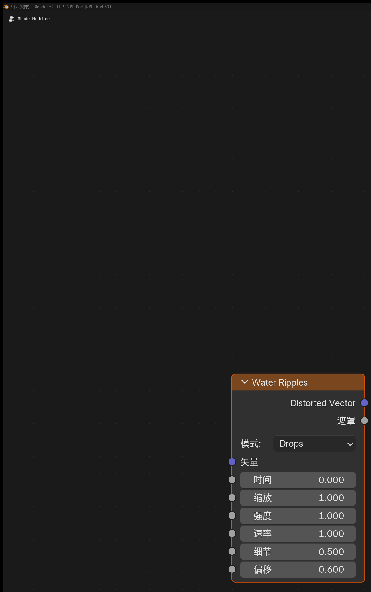
输入输出¶
- 输入：
Vector - 输入：
Time - 输入：
Scale - 输入：
Intensity - 输入：
Speed - 输入：
Detail - 输入：
Bias - 输出：
Distorted Vector - 输出：
Mask
面板选项¶
ModeDropsRipplesFlowCaustic
作用¶
生成程序化水波扰动和强度遮罩。
Hex Grid Texture¶
入口¶
Add > Texture > Hex Grid Texture

输入¶
VectorScaleSizeRadiusRoundness
输出¶
ValueColorHex CoordsPositionCell UVCell ID
面板选项¶
Coordinate ModeXY PositionHex PositionValue ModeHexagonsSDF HexagonsDotsDirectionHorizontalVerticalHorizontal TiledVertical TiledClamp
作用¶
生成六边形网格纹理，可用于蜂窝图案、格子分块、SDF 遮罩和六边形坐标分区。
SDF Primitive¶
入口¶
Add > Texture > SDF Primitive
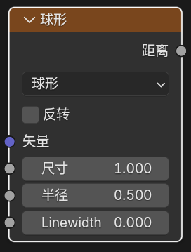
输出¶
Distance
作用¶
在材质节点里直接生成符号距离场（SDF）基础形体。
SDF Operator¶
入口¶
Add > Converter > SDF Operator
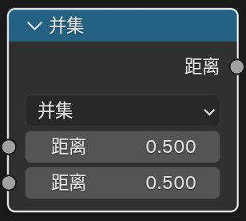
输出¶
Distance
作用¶
对一个或两个 SDF 距离场做组合、裁切和软边变形。
SDF Vector Operator¶
入口¶
Add > Utilities > Vector > SDF Vector Operator

输出¶
VectorPositionValue
作用¶
在进入 SDF Primitive 之前，先对采样坐标、UV 或向量域做重复、镜像、旋转、扭曲、平铺和范围映射等处理。
4. Goo Engine / NPR 相关输入节点¶
Bevel¶
入口¶
Add > Input > Bevel

输入输出¶
- 输入：
Radius、Normal - 输出：
Normal
作用¶
在 Eevee 中生成近似的倒角法线，让硬边看起来更圆润。
Curvature¶
入口¶
Add > Input > Curvature
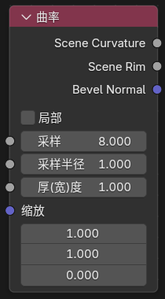
输入¶
SamplesSample RadiusThicknessScale
输出¶
Scene CurvatureScene Rim
面板选项¶
LocalSample RadiusPixelView
说明¶
Local开启后，会尽量只按当前物体自身的信息计算Pixel模式下，Sample Radius以像素为单位，效果会随分辨率变化View模式下，Sample Radius会按视图相对尺度解释，更适合保持视图和最终渲染中的 rim 宽度一致- 这是屏幕空间节点，结果会受到当前视角、屏幕分辨率和采样半径影响
Shader Info¶
入口¶
Add > Input > Shader Info
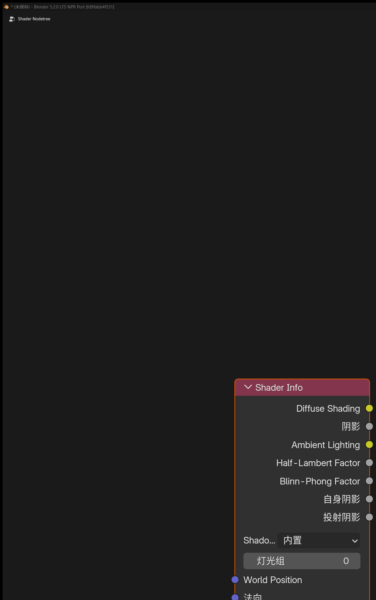
输入¶
World PositionNormalExponent
输出¶
Diffuse ShadingShadowAmbient LightingHalf-Lambert FactorBlinn-Phong Factor
各输出的含义¶
Diffuse Shading- 每个灯光的兰伯特光照之和，再钳制到
0-1 Shadow- 可切换阴影模式
Built-in：使用 Eevee 原本的阴影计算Soft Filtered：对当前表面附近的一像素邻域做额外采样和平均，把黑白抖动阴影重建成更平滑的灰度半影Ambient Lighting- 来自探针 / 环境间接光的环境照明信息
Half-Lambert Factor- 每个灯光的半兰伯特光照之和，再钳制到
0-1 Blinn-Phong Factor- 每个灯光的布林冯高光因子按镜面通道加权求平均，再钳制到
0-1 - 默认不直接乘阴影，需要时请与
Shadow输出自行组合
额外说明¶
Shadow ModeBuilt-inSoft FilteredExponent- 控制布林冯高光的锐度，数值越高高光越集中
- 默认值为
16 - 当
Shadow Mode = Soft Filtered时，可用Stable Samples提高阴影质量 - 节点面板新增
Lightgroup - 只有
Lightgroup ID相同的灯光，才会参与这个Shader Info节点的直接光照与阴影计算 - 当前实现会排除 world sun 对这些输出的干扰，避免 HDRI 或世界环境里的“太阳光”混入直接结果
Light Info¶
入口¶
Add > Input > Light Info

功能说明¶
读取指定灯光信息。
固定输出¶
ColorPowerTypeVisible
Visible 在所选灯光对象未隐藏时输出 1，隐藏时输出 0。
其中 Type 是整数插槽，含义为：
-1：没有指定灯光0：Point1：Sun2：Spot3：Area
按灯光类型自动出现的输出¶
PositionDirectionRadiusSpot SizeSun Angle
当前版本会根据灯光类型自动隐藏 / 显示相关接口：
Point：Position、RadiusSun：Direction、Sun AngleSpot：Position、Direction、Radius、Spot SizeArea：Position、Direction、Radius
说明¶
- 如果你要做逐灯处理，应该使用
NPR Tree里的For Each Light
Light Shader Info / Light Shader Output¶
入口¶
在灯光的 Eevee Light Shader 节点树中使用：
Add > Input > Light Shader InfoAdd > Output > Light Shader Output
功能说明¶
Light Shader Output 用来为单盏 Eevee 灯光输出自定义的直接光颜色、强度和衰减。它只用于灯光节点树，不是普通物体材质输出节点。

灯光节点树中的 Light Shader Info 与 Light Shader Output
Light Shader Info 输出¶
Default ColorDefault IntensityDefault AttenuationDistanceLight SpaceDirectionWorld PositionRotation
这些输出读取当前被评估灯光在当前采样点上的默认数据，适合作为自定义灯光 shader 的原始输入。
Light Shader Output 输入和设置¶
Color：输出灯光颜色Intensity：乘到Color上的非负强度Attenuation：输出到 Light Shader 缓存 alpha 的非负衰减值Range Scale：缩放 Eevee 参与剔除和阴影使用的灯光影响范围；默认1保持原始灯光范围
最终写出的 Light Shader 结果语义为：
vec4(Color.rgb * max(Intensity, 0.0), max(Attenuation, 0.0))
行为说明¶
- 如果灯光没有自定义 Light Shader 输出，会保持普通 Eevee 灯光行为
- Light Shader 结果会参与 Eevee surface、deferred / NPR、forward、volume、probe capture 等已接入路径的直接光评估
GLSL Function的glsl_light_get(i)在 Surface 材质路径中会读取已评估的 Light Shader 颜色和衰减GLSL Function只把 Light Shader 结果应用到diffuse_color、specular_color和attenuation；灯光类型、位置、方向、距离和lightgroup_id保持 raw 灯光数据- 体积、probe bake、surfel 等路径会使用 Light Shader Output 参与 Eevee 自身光照，但不扩展
GLSL Function灯光 helper 的公共语义
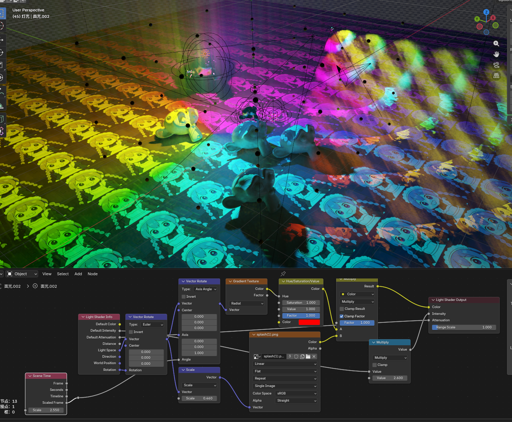
Light Shader Output 对灯光颜色与衰减的影响示例
5. 内置节点增强¶
OKLab Color Ramp¶
入口¶
Add > Color > OKLab Color Ramp
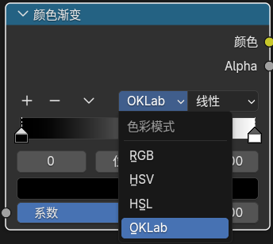
作用¶
独立的 OKLab Color Ramp 节点会固定使用 OKLab 颜色空间评价色带，可在颜色过渡时得到更稳定、更接近感知均匀的渐变结果。
说明¶
- 普通
Color Ramp保持原有 RGB / HSV / HSL 工作流 OKLab Color Ramp的输入、输出和 stop 编辑方式与普通Color Ramp一致- 旧版
Color Ramp + OKLab模式文件会在打开时迁移回独立OKLab Color Ramp节点 - 该节点可用于 Shader、Geometry、Compositor 以及 Eevee Light Shader 支持的节点树